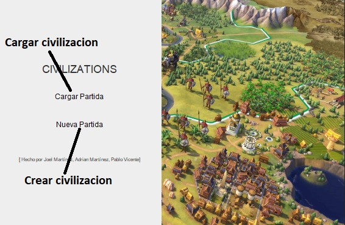
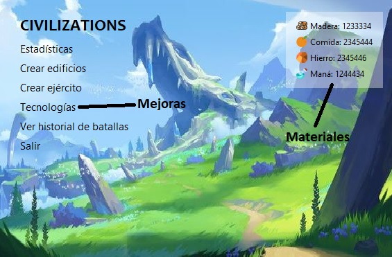
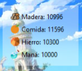
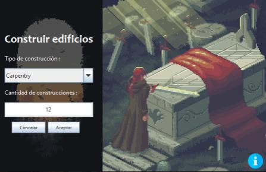
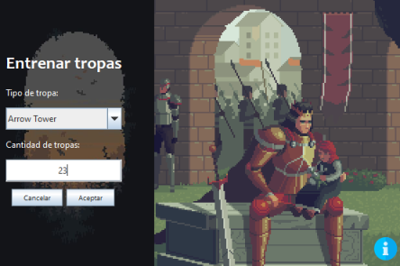

TUTORIAL
Introduccion
Bienvenido al tutorial de Civilizations, donde aprenderás todo lo necesario para convertirte en un maestro en la gestión de tu propia civilización. Este tutorial está diseñado para guiarte paso a paso a través de las mecánicas fundamentales del juego, asegurando que comprendas cómo aprovechar al máximo tus recursos, desarrollar tecnologías, construir edificaciones y liderar a tus tropas para defender tu territorio.
Índice
1. Cargar y crear civilizaciones 2. Interfaz principal 3. Economia 4. Construcciones 5. Tropas 6. Batallas 7. Mejoras Preguntas Frequentes1. Cargar y crear civilizaciones
Antes de empezar a jugar, necesitamos tener una civilizacion. Para crear una civilizacion simplemente hay que clicar en "Nueva Partida" en el menu que se muestra al abrir la aplicacion. Si ya tenemos una partida, simplemente hay que clicar en "Cargar Partida":
En el caso de crear una civilizacion, nos pedira un nombre. Este puede contener mayusculas, espacios y numeros. En el otro caso de que ya tengamos una creada y ahora queramos cargarla, simplemente hay que seleccionarla en la lista. Esta lista contiene todas las civilizaciones creadas por el usuario anteriormente.
2. Interfaz principal
La interfaz de este juego es bastante simple. A la izquierda tenemos diferentes opciones, que nos permiten manipular nuestra aldea, ver estadisticas y el historial, mejorar el ataque y defensa y salir de la partida. En el panel superior derecha, podemos observar los materiales que tenemos.
Ahora despues de observar la interfaz, podemos adentrarnos un poco mas en las mecanicas del juego y explicar el funcionamiento de ciertos puntos.
3. Economia
La economia de este juego se maneja con materiales. Todo lo que podemos comprar o construir dentro del juego utiliza estos materiales. Hay 4:
- Madera
- Comida
- Hierro
- Mana
Dependiendo de lo que estamos construyendo, puede usar diferentes materiales. Por ejemplo, las tropas especiales requieren una cierta cantidad de mana y comida. Todas las tropas requieren comida, ya que son humanos. Tambien se requieren estos materiales al momento de mejorar el ataque y defensa de nuestra civilizacion.
Los materiales se generan cada segundo, exceptuando el mana a no ser que tengamos una magic tower.
4. Construcciones
Las construcciones son muy importantes dentro del juego, es uno de los pilares para una buena defensa. Primeramente, ofrecen mejoras en la generacion de materiales y ciertas tropas requieren algun edificio para poder ser creadas.
Las construcciones son las siguientes:
- Granja (+10% generación de comida)
- Carpintería (+10% generación de madera)
- Herrería (+10% generación de hierro)
- Torre Magica (permite crear magos)
- Isglesia (permite crear sacerdotes)
Para crear un edificio, simplemente nos tenemos que dirigir a la opcion de "Crear Edificios". En esta vista, debemos escoger cual edificio crear y la cantidad. finalmente para crearlas clicamos en "Crear", obviamente si tenemos los suficientes materiales.
5. Tropas
Esta es la parte mas importante del juego, ya que necesitamos las tropas para poder defender la aldea y no perder recursos. Las tropas de dividen en diferentes tipos: de ataque, de defensa y especiales. Aqui una lista mas detallada.
-
Unidades de ataque
- Espadachin
- Lancero
- Ballesta
- Cañón
-
Unidades de defensa
- Torre Lanza
- Catapulta
- Torre Lanzacohetes
-
Unidades especiales
- Mago
- Sacerdote
Es importante recordar que para el mago necesitamos una Torre Magica y para el sacerdote necesitamos una Isglesia. El Sacerdote no ataca pero puede santificar las tropas. Esto significa que se les aplica un incremento en sus estadisticas y las hace mejores.
Para crearlas, es tan facil como irse al menu de "Crear Tropas", donde simplemente escojemos que tropa queremos crear y la cantidad. Si añadimos un sacerdote, se nos santifican tropas automaticamente
6. Batallas
Las batallas no hay mucho que explicar, ya que son automaticas. Cada 3 minutos se empieza una batalla, con avisos previos. Es importante tener tropas bien distribuidas para que se tenga una mayor probabilidad de victoria.
Cuando empieza una batalla, se tienen 30 segundos para ver las tropas del jugador y del enemigo. El enemigo solo tiene tropas de ataque. En esta pantalla se nos permite incluso escapar del enemigo, pero no obtendremos ningun material.
En el momento de terminarse los 30 segundos o darle al boton de batallar, los ejercitos se toman turnos para atacar. Todo funciona por probabilidad.
Despues de que acabe la batalla, todas las tropas supervivientes reciben un punto de experiencia y restauran toda la vida.
7. Mejoras
Con los suficientes materiales, se puede mejorar el ataque y la defensa de la civilizacion. Esto afecta a las tropas, se le añade un plus de ataque y defensa por nivel de la civilizacion.
Cuanto mas grande sea el nivel, mas materiales se necesitaran para mejorar. Para hacerlo, simplemente nos dirijimos al menu de tecnologias. Ahi, podemos clicar en 2 botones, uno para mejorar el ataque y otro para mejorar la defensa
Preguntas frequentes
- Cuantas civilizaciones se pueden tener?
Todas las que queramos, simplemente se crea una nueva entrada en la base de datos.
- Hay un maximo de tropas o estructuras?
No, se pueden tener tantas como queramos.
- Para santificar unidades que se tiene que hacer?
En el momento de comprar un priest, te deja seleccionar el tipo de tropa que quieres santificar, entonces se santifican todas las unidades de ese tipo.
- Cuantos sacerdotes puedo crear por cada isglesia?
Solo uno, si quieres mas sacerdotes necesitas mas isglesias.
- Las tropas tienen funciones diferentes dentro de la batalla?
Sí, por ejemplo el sacerdote no ataca, simplemente hace las tropas mas fuertes, luego las estadisticas y probabilidades varian con el tipo de tropa